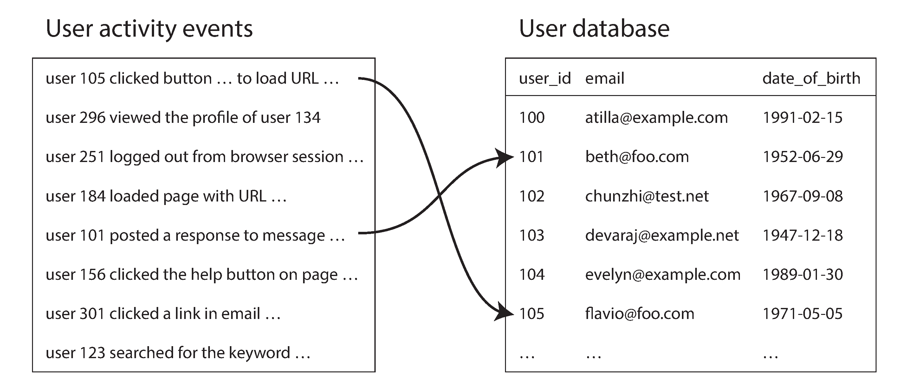
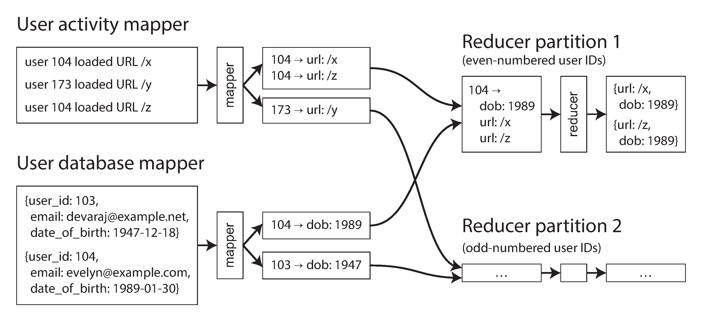

Batch processing is ancient: punch card tabulating machines (1890 US Census), IBM card-sorting machines (1940s). MapReduce bears an uncanny resemblance!
Processes gigabytes in seconds. Easily modified for different analyses.
Sorting vs In-Memory Aggregation
Hash Table (Ruby/Python)
counts = Hash.new(0)
File.open(log) do |file|
file.each do |line|
url = line.split[6]
counts[url] += 1
end
end
✅ Works if distinct URLs fit in memory
❌ Fails for large working sets
Sort-Based (Unix)
GNU sort automatically:
Spills to disk when > memory
Parallelizes across CPU cores
Sequential I/O (fast on disk!)
Same principle as SSTables & LSM-Trees (Ch. 3)
The Unix Philosophy (1978)
"We should have some ways of connecting programs like a garden hose—screw in another segment when it becomes necessary to massage data in another way."
— Doug McIlroy (1964), inventor of Unix pipes
Make each program do one thing well.
Expect output to become input to another, unknown program.
Design to be tried early — prototype in weeks, throw away clumsy parts.
Use tools over unskilled help — even if you detour to build them.
💡 Sounds like Agile & DevOps — surprisingly little has changed in four decades!
A Uniform Interface
Why can Unix programs compose so well?
📄 Everything is a file (file descriptor): actual files, pipes, sockets, devices
📝 Convention: newline-separated ASCII text records
🔌 stdin / stdout = the universal connector
Contrast with today's world:
You can't easily pipe email, shopping history, and social media through a custom tool into a spreadsheet. Unix tools compose better than almost any modern software!
Similar idea: URLs & HTTP — a uniform interface that made the web successful.
Separation of Logic & Wiring
stdin/stdout: program doesn't know or care where input comes from or output goes
Shell user decides the wiring — loose coupling, inversion of control
Write your own tool: just read stdin, write stdout → instantly composable
Transparency & Experimentation
📖 Immutable inputs — run commands as many times as you want
🔍 Inspect anywhere — pipe to less at any stage
💾 Save intermediate output to a file, restart later stages
Biggest limitation: Unix tools run on a single machine. Enter Hadoop…
MapReduce and Distributed Filesystems
Unix tools, distributed across thousands of machines
HDFS: The Foundation
Hadoop Distributed File System — open source reimplementation of Google File System (GFS).
Shared-nothing: commodity hardware, no special storage appliance
Daemon on each machine exposes local disk over network
NameNode tracks which file blocks are on which machine
Blocks replicated on multiple machines (or erasure coded)
100s PB
Storage on tens of thousands of machines — much cheaper than NAS/SAN
Also: GlusterFSS3Azure BlobGCS
MapReduce: Four Steps
Like the Unix log analysis pipeline, but distributed:
1. Split — break input files into records (like lines in a log)
2. Map — extract key-value pairs from each record (like awk '{print $7}')
3. Sort — sort all key-value pairs by key (implicit, like sort)
MapReduce jobs in a typical recommendation system workflow
Joins in Batch Processing
Bringing related data to the same place
Why Joins Matter in Batch
MapReduce has no indexes — it does full table scans
Fine for analytics (scanning large datasets), terrible for point lookups
We need to resolve associations across entire datasets simultaneously
⚠️ Naive approach fails:
Don't query a remote database for each record!
Network round trips → orders of magnitude slower
Batch job becomes nondeterministic (remote data may change)
Parallel queries can overwhelm the database
✅ Instead: put both datasets on HDFS and join locally.
Example: User Activity
Join activity events (fact table) with user profiles (dimension):
Activity log has user_id but no profile info
User DB has age, name, etc.
Goal: "which pages are popular with which age groups?"
Take a copy of the user DB (ETL extract) and put it on HDFS alongside the event logs.

Sort-Merge Join
Mapper 1: activity events → (user_id, event)
Mapper 2: user DB → (user_id, DOB)
Framework sorts & groups by user_id
Reducer sees user record first (secondary sort), then all events
Reducer logic is trivial:
Store DOB in local variable
Iterate events, output (url, age) pairs
No network requests, low memory

Bringing Data Together
The key insight of MapReduce joins:
Mappers "send messages" to reducers. The key acts like a destination address. All key-value pairs with the same key are delivered to the same reducer call.
This pattern also applies to GROUP BY:
COUNT(*), SUM(field), top-k ranking
Sessionization: group all activity events for a user session
A/B testing: compare user behavior across website versions
MapReduce separates physical network communication from application logic — framework handles retries, partial failures transparently.
Handling Skew (Hot Keys)
A celebrity with millions of followers → one reducer gets all their data → bottleneck!
🎲 Pig: Skewed Join
Sampling job detects hot keys
Hot key records → random reducers
Other join input replicated to all those reducers
📋 Hive: Skewed Join
Hot keys specified in table metadata
Stored in separate files
Uses map-side join for hot keys
For GROUP BY with hot keys: two-stage aggregation — random partial aggregation → final merge. Same idea as Ch. 6 (relieving hot spots).
Map-Side Joins
Skip the expensive reduce phase — when you can make assumptions about the data:
📡 Broadcast Hash Join
Small dataset fits in memory → each mapper loads it into a hash table.
Pig: "replicated join" Hive: "MapJoin"
🗂️ Partitioned Hash Join
Both inputs partitioned the same way → mapper loads only its partition.
Hive: "bucketed map join"
🔀 Map-Side Merge
Both inputs partitioned and sorted by same key → sequential merge, like a reduce step.
No reducers, no sorting, no shuffle — just read input blocks and write output files.
Map-Side vs Reduce-Side Joins
Reduce-Side
✅ No assumptions about input
✅ Works for any data layout
❌ Expensive: sort, shuffle, merge
❌ Data written to disk multiple times
Output: partitioned by join key
Map-Side
✅ No shuffle overhead
✅ Much faster when applicable
❌ Requires specific data layout
❌ Must know partitioning scheme
Output: partitioned like large input
Metadata about dataset partitioning: HCatalogHive Metastore
Output of Batch Workflows
What do we do with all this processing?
Building Search Indexes
Google's original use of MapReduce — a workflow of 5–10 jobs.
Mappers partition the document set
Each reducer builds the index for its partition
Index files are immutable once written
Read-only → simple data structures, no WAL needed
Two strategies for updates:
Full Rebuild
Rerun entire workflow, replace old index files wholesale.
Incremental
Lucene-style: new segments + background merge. (→ Ch. 11)
Key-Value Stores as Batch Output
Build ML models, recommendation DBs, classifier outputs:
Build brand-new DB files inside the batch job
Write as immutable files to HDFS
Load in bulk into read-only serving servers
VoldemortTerrapinElephantDBHBase bulk loading
⚠️ Never write directly to a production DB from mappers/reducers:
A) Clients, databases, and message queues running at interactive latencies
B) Frontend, backend, database
C) Services (online), batch processing (offline), stream processing (near-real-time)
D) Databases, caches, queues
Answer: C) Services (online systems), batch processing systems (offline), and stream processing systems (near-real-time).
Q2Online Systems
What characterizes an online (service) system?
A) Processes all data at once
B) Runs periodically
C) Waits for requests, processes them, and sends responses — measured by response time
D) Processes requests asynchronously in large scheduled batches optimized for throughput
Answer: C) An online system waits for a client request, handles it, and sends a response. Response time is the primary metric.
Q3Batch Processing
What characterizes a batch processing system?
A) Instant responses
B) Processes one record at a time
C) Continuously serves interactive requests and is optimized primarily for low response time
D) Takes a large amount of input data, runs a job to process it, and produces output — measured by throughput
Answer: D) Batch processing takes a large dataset, processes it, and produces output. Throughput (data processed per time) is the key metric.
Q4Stream Processing
What characterizes stream processing?
A) Near-real-time: processes events shortly after they happen, with lower latency than batch
B) Processes data in bulk
C) Only handles network traffic
D) Processes a fixed daily dataset after it has been fully collected on disk
Answer: A) Stream processing is between online and batch — it operates on events shortly after they happen, rather than on a fixed dataset.
Q5Unix Philosophy
What is the Unix philosophy?
A) Build larger integrated tools that handle parsing, storage, and presentation together
B) Make each program do one thing well, expect output to become input for another, and compose them via pipes
C) Avoid text files
D) Build monolithic programs
Answer: B) The Unix philosophy: write programs that do one thing well, handle text streams (universal interface), and compose via pipes.
Q6Unix Pipes
What do Unix pipes enable?
A) Process scheduling
B) Redirecting program output into files for later inspection and reuse
C) Composing small programs into powerful data processing pipelines
D) Network communication
Answer: C) Pipes connect the stdout of one program to stdin of another, enabling flexible composition of tools.
Q7Uniform Interface
What is the 'uniform interface' in Unix?
A) A shared command syntax that lets all Unix programs expose the same operations
B) GUI
C) HTTP
D) Files (file descriptors) — everything is a file, and programs read/write byte sequences
Answer: D) The uniform interface is the file (specifically, a file descriptor): a byte sequence that programs can read and write.
Q8Loose Coupling
What does the Unix philosophy achieve regarding coupling?
A) Bidirectional coupling
B) Loose coupling — programs don't need to know about each other, just read stdin and write stdout
C) Tight coupling
D) Static coupling where programs are configured together before the pipeline can run
Answer: B) Unix programs are loosely coupled: they don't know or care what reads their output — it's just bytes.
Q9MapReduce
What is MapReduce?
A) A low-level network protocol that handles message framing and delivery between nodes
B) A programming model for processing large datasets in parallel across a distributed cluster
C) A single read or write operation that targets exactly one row or document at a time
D) A distributed file system for storing mapper and reducer outputs across a cluster
Answer: B) MapReduce is a programming framework for processing large amounts of data in a distributed setting, inspired by Unix tools.
Q10MapReduce Origin
Who published the original MapReduce paper?
A) Yahoo (Doug Cutting, 2006)
B) Microsoft
C) Facebook
D) Google (Jeff Dean and Sanjay Ghemawat, 2004)
Answer: D) MapReduce was published by Jeff Dean and Sanjay Ghemawat at Google in 2004.
Q11Hadoop
What is Hadoop?
A) An open-source implementation of MapReduce with HDFS (Hadoop Distributed File System)
B) A low-level network protocol that handles message framing and delivery between nodes
C) A distributed storage layer that exposes tables and secondary indexes over HDFS
D) A programming language
Answer: A) Hadoop is the open-source implementation of MapReduce, with HDFS as its distributed file system.
Q12HDFS
What is HDFS?
A) A database
B) A local file system
C) Hadoop Distributed File System — stores large files across many machines with replication
D) A distributed database that shards tables across machines for parallel queries
Answer: C) HDFS stores data across many machines with replication for fault tolerance. It's based on Google's GFS.
Q13HDFS Replication
How does HDFS handle fault tolerance?
A) Replicates each block on multiple machines (typically 3 copies)
B) Stores parity information on dedicated disks inside a single storage appliance
C) No fault tolerance
D) Checksums only
Answer: A) HDFS replicates each file block on multiple machines, typically keeping 3 copies for fault tolerance.
Q14Map Phase
What does the mapper function do?
A) Writes to database
B) Buffers records until all input is read, then groups them by key before emitting output
C) Called once for each input record; extracts a key and value from each record
D) Joins tables
Answer: C) The mapper is called once for each input record and extracts a key-value pair from the input record.
Q15Reduce Phase
What does the reducer function do?
A) Maps keys to values
B) Sorts the input
C) Collects all values belonging to the same key and processes them to produce output
D) Writes one output record for every input record without grouping by key first
Answer: C) The reducer takes all the values for a given key and combines them to produce zero or more output records.
Q16Shuffle
What happens between map and reduce?
A) Mapper output is streamed straight to reducers in arrival order, without any repartitioning or sorting by key
B) Data is compressed
C) Reducers begin processing as soon as the first mapper emits records, even if matching keys are still elsewhere
D) The framework sorts and partitions mapper output by key, sending all values for a key to the same reducer (shuffle)
Answer: D) The shuffle stage partitions the mapper output by key, sorts it, and routes all values for the same key to the same reducer.
Q17MapReduce Fault
How does MapReduce handle a failed task?
A) Restart the entire job
B) Marks the failed machine unavailable and waits for an operator before continuing the computation
C) Ignore the failure
D) Reschedule the failed task on another machine — mappers re-read input; reducers re-fetch mapper output
Answer: D) If a map or reduce task fails, MapReduce reschedules it on another machine. Mappers re-read from HDFS; reducers re-fetch from mappers.
Q18Deterministic Map
Why should MapReduce mappers be deterministic?
A) For performance
B) So that re-executing a failed mapper produces the same output — enabling reliable retry
C) For readability
D) So that different retries can explore alternative outputs and improve aggregate accuracy
Answer: B) Deterministic mappers ensure that re-execution on failure produces identical output, maintaining correctness.
Q19Sort-Merge Join
How does MapReduce implement joins?
A) Hash lookup: mapper builds a hash table in memory from the smaller dataset; reducer probes it with records from the larger dataset to find matches
B) Sort-merge join: mapper emits key-value pairs; reducer receives all values for a key from both datasets, sorted and ready to join
C) Index scan: mapper queries a remote database index for each input record; reducer collects matched pairs and outputs the final joined result
D) Nested loops: mapper iterates over both datasets in a nested fashion; reducer deduplicates and merges the matched pairs into final output
Answer: B) Both datasets' mappers emit records keyed by the join key. The reducer sees all matching records from both sides, sorted together.
Q20Secondary Sort
What is secondary sort in MapReduce?
A) A second sort job
B) Sorting the values within each key group — e.g., ensuring dimension records appear before fact records for a given key
C) Sorting reducer output a second time so the largest key groups are written first in the final files
D) Sorting by value
Answer: B) Secondary sort arranges values within a key group in a specific order so the reducer sees them in the right sequence.
Q21Broadcast Join
What is a broadcast hash join?
A) A small dataset is loaded entirely into memory on each mapper, which then joins with its local partition of the large dataset
B) Every mapper broadcasts its intermediate join keys over the network so all other mappers can match them locally
C) Sending all data to one node
D) Joining with a broadcast signal
Answer: A) The small dataset is loaded into a hash table in memory on each mapper. Each mapper joins it with its partition of the large dataset.
Q22Partition Hash Join
What is a partition hash join?
A) Joining with encryption
B) Both inputs are partitioned the same way; each partition is independently joined in memory using a hash table
C) One input is fully replicated to every partition, where each mapper joins it against its local records
D) Joining data randomly
Answer: B) If both inputs are partitioned by the join key using the same hash, matching records end up in the same partition for efficient joining.
Q23Skew Problem
What is the 'hot key' skew problem in MapReduce joins?
A) Keys are too large
B) Keys are duplicated
C) A join key appears in many partitions, so matching records must be gathered from several reducers
D) A key with many values causes one reducer to process far more data than others, creating a bottleneck
Answer: D) If one key has a disproportionate number of records (like a celebrity's user ID), the reducer handling it becomes a bottleneck.
Q24Skew Mitigation
How can skew be mitigated in MapReduce?
A) Hash hot keys to a dedicated reducer and let that machine cache all matching records in memory
B) Use a bigger reducer
C) Pig's skewed join: send records for hot keys to multiple reducers with replicated join input
D) Delete hot keys
Answer: C) Pig's skewed join sends hot key records to random reducers and replicates the other join input to those reducers.
Q25Map-Side Joins
What is the advantage of map-side joins over reduce-side joins?
A) They preserve the global sort order of both inputs while still using reducers for aggregation
B) Handle more data
C) More flexible
D) No reducer needed, no sorting or shuffling — each mapper reads and joins data locally
Answer: D) Map-side joins avoid the overhead of sorting, shuffling, and reducing. The mapper directly reads and joins data.
Q26Output
What does a MapReduce job typically output?
A) Mutable tables in HBase that downstream jobs update incrementally as records arrive
B) A new set of files in the distributed file system — the output is immutable
C) Updates to a database
D) Network responses
Answer: B) MapReduce jobs write their output as new files in HDFS. The output of one job becomes the input of the next.
Q27Immutable Output
Why is immutable output a good practice?
A) Faster writes
B) Better encryption
C) Intermediate datasets can be merged in place, so later stages read less data from disk
D) If the job fails or has a bug, you can re-run it without corrupting the input — easy retry and rollback
Answer: D) Immutable outputs mean the input is never modified. If something goes wrong, you can simply re-run the job safely.
Q28Materialization
What is the materialization problem in MapReduce?
A) Data is too physical
B) Memory overflow
C) Reducers must keep every key group fully in memory before any output can be written downstream
D) Each job must fully write its output to disk before the next job can start — wasting time and disk space
Answer: D) MapReduce materializes (writes to disk) all intermediate state between jobs, adding latency and I/O overhead.
Q29Dataflow Engines
What are dataflow engines like Spark, Tez, and Flink?
A) Distributed query optimizers that only execute relational operators over normalized tables
B) Operating systems
C) Network protocols
D) Alternatives to MapReduce that allow more flexible execution graphs (not just map→reduce)
Answer: D) Dataflow engines like Spark, Tez, and Flink generalize the MapReduce model with flexible operator DAGs.
Q30Operators
In dataflow engines, what replaces map and reduce?
A) General-purpose operators — each can perform map-like, reduce-like, or other transformations
B) Fixed execution stages where every job must still alternate strictly between map and reduce
C) SQL queries
D) Stored procedures
Answer: A) Dataflow engines use general operators that can perform any function — mapping, filtering, joining, aggregating, etc.
Q31Pipelining
How do dataflow engines improve on MapReduce's materialization?
A) They use more disk
B) They use compression
C) They pipeline data between operators in memory, avoiding unnecessary disk writes between stages
D) They still write every intermediate result to HDFS, but use faster file formats to hide the cost
Answer: C) Dataflow engines can pass data between operators through memory (pipelining), significantly reducing I/O.
Q32Spark RDD
What is an RDD in Spark?
A) Resilient Distributed Dataset — an immutable, distributed collection that tracks its lineage for fault tolerance
B) Remote Data Distribution
C) Replicated Data Directory — a metadata catalog that tracks where Spark partitions are stored
D) Relational Database Design
Answer: A) RDD = Resilient Distributed Dataset. It's Spark's core abstraction: an immutable distributed dataset with lineage tracking.
Q33Fault Tolerance DF
How do dataflow engines handle fault tolerance?
A) Recomputing lost data from the input — the lineage/DAG tells the system what to re-execute
B) Checkpointing only
C) Ignoring faults
D) Manual recovery — fault tolerance mechanisms detect, contain, and recover from failures without requiring human intervention
Answer: A) If a partition is lost, the engine recomputes it by re-executing the operators from the input data, guided by the execution graph.
Q34Graph Processing
What is graph processing in the context of batch?
A) Graph databases
B) Drawing graphs
C) Processing data modeled as a graph (vertices and edges) — like PageRank, social network analysis
D) Rendering node-link diagrams so analysts can visually inspect relationships in large datasets
Answer: C) Graph processing operates on data modeled as graphs (vertices and edges), running iterative algorithms like PageRank.
Q35Pregel
What is the Pregel model?
A) A single read or write operation that targets exactly one row or document at a time
B) A low-level network protocol that handles message framing and delivery between nodes
C) Bulk Synchronous Parallel — vertices process messages in rounds (supersteps), sending messages along edges
D) A distributed storage model where partitions exchange state snapshots after each synchronized round
Answer: C) Pregel (BSP model): in each superstep, a vertex processes messages from the previous step, then sends messages to its neighbors.
Q36PageRank
What is PageRank an example of?
A) A filtering technique that removes low-ranked vertices from the graph before running traversal queries
B) A join strategy that matches incoming edges with vertex metadata before aggregation on each node
C) A global sorting method that orders vertices by out-degree so the most connected nodes appear first
D) An iterative graph algorithm where each vertex's importance is determined by the importance of vertices linking to it
Answer: D) PageRank is an iterative graph algorithm: a vertex's rank depends on the ranks of vertices that point to it.
Q37MapReduce Graph
How can graph algorithms be done in MapReduce?
A) Only with SQL
B) Multiple iterations of MapReduce jobs — each iteration processes one step of the algorithm
C) They run in a single reducer that keeps the entire graph state in memory across the computation
D) Single MapReduce job
Answer: B) Graph algorithms in MapReduce require multiple iterations, each one a separate MapReduce job, which is inefficient.
Q38Pregel Advantage
What advantage does Pregel have over iterated MapReduce for graphs?
A) Simpler application code because each node only handles a fraction of the total query volume
B) Better fault tolerance
C) Only vertices that have messages to process are active; the graph structure stays in memory between iterations
D) It writes every superstep to distributed storage so failed iterations can resume from disk
Answer: C) Pregel keeps the graph in memory and only processes active vertices, avoiding the overhead of shuffling the entire graph each iteration.
Q39Unix Analogy
How is MapReduce analogous to Unix tools?
A) They both require every processing stage to run on one machine, using only local files and shell scripts
B) Same language
C) Like Unix pipes: input files → map (like grep/awk) → sort → reduce (like uniq -c) → output files
D) Same code
Answer: C) MapReduce is like a distributed version of Unix commands: map is like grep/awk, shuffle is like sort, reduce is like uniq -c/aggregation.
Q40Simple Log Analysis
What is the simplest Unix command pipeline for log analysis?
A) awk '{print $1}' access.log | sort | uniq -c | sort -rn | head -5
B) SELECT * FROM logs
C) cat access.log | awk '{print $7}' | sort | uniq -c | sort -rn | head -5
D) grep error access.log
Answer: C) This pipeline extracts URLs, sorts them, counts occurrences, sorts by count, and shows the top 5 — a simple batch analysis.
Q41Shared Nothing
MapReduce is based on what architecture?
A) Single machine
B) Shared memory
C) Shared-memory clusters where workers coordinate through a central in-memory state store
D) Shared-nothing — each node uses its own CPU, memory, and disk
Answer: D) MapReduce runs on shared-nothing commodity hardware where each machine has independent resources.
Q42Commodity Hardware
Why does MapReduce use commodity hardware?
A) Because local disks on commodity nodes are always faster than specialized database appliances
B) For compatibility
C) Cost-effective: cheaper than specialized parallel database hardware, with fault tolerance built into software
D) For security
Answer: C) Commodity hardware is cheaper. MapReduce builds fault tolerance in software, tolerating individual machine failures.
Q43MPP vs MapReduce
How do MPP databases differ from MapReduce?
A) MPP databases are optimized for parallel SQL queries on structured data; MapReduce handles arbitrary code on any data format
B) MPP has no fault tolerance
C) MapReduce is faster
D) MPP databases are schema-on-read systems for raw files, while MapReduce requires fixed relational schemas
Answer: A) MPP databases optimize SQL on structured data. MapReduce handles arbitrary processing logic on any data format.
Q44Schema on Read
What does MapReduce use instead of schema-on-write?
A) Schema-on-read — data is interpreted by the reader, not enforced on write
B) XML schema
C) JSON schema
D) Schema inference at write time — the loader automatically decides the correct structure for each record
Answer: A) MapReduce uses schema-on-read: raw data is stored and the processing code interprets the structure at read time.
Q45Diversity
What advantage does schema-on-read provide?
A) Flexibility to process diverse data formats without requiring upfront schema design
B) Strict validation
C) It guarantees consistent field names and types across every dataset loaded into the system
D) Better performance
Answer: A) Schema-on-read allows processing varied, messy, or evolving data formats without requiring upfront schema design.
Q46Data Lake
What is a data lake approach?
A) An in-memory cache
B) A database schema
C) Dump raw data into HDFS first, then figure out how to process it later — shift data modeling downstream
D) A centralized warehouse where all incoming data is cleaned, modeled, and normalized before storage
Answer: C) The data lake approach stores raw data in HDFS, deferring structure and interpretation to the processing stage.
Q47Sushi Principle
What is the 'sushi principle' in data processing?
A) Serialize data into a strict canonical format early so every downstream job reads the same structure
B) Raw data is better — keep data in its rawest form and transform it as needed downstream
C) Raw data is dangerous
D) Cook data first
Answer: B) The sushi principle: raw data is better. Store it raw and process it as needed, rather than transforming it on ingest.
Q48MapReduce Workflow
How are complex workflows built in MapReduce?
A) Chaining multiple MapReduce jobs — output of one becomes input to the next
B) Single job
C) Embedding all stages in one giant reducer that calls the next computation as a subroutine
D) Nested queries
Answer: A) Complex workflows are built by chaining MapReduce jobs, where each job's output directory becomes the next job's input.
Q49Workflow Schedulers
What tools manage MapReduce workflow dependencies?
A) Airflow, Oozie, Azkaban, Luigi, Pinball
B) YARN queues and ad hoc shell scripts
C) Jenkins only
D) cron
Answer: A) Workflow schedulers like Oozie, Azkaban, Luigi, Airflow, and Pinball manage dependencies between MapReduce jobs.
Q50Hadoop Ecosystem
What makes up the Hadoop ecosystem?
A) Only the storage and execution layers, without higher-level query or workflow tools
B) Just MapReduce
C) Only Hive
D) HDFS, MapReduce, Hive, HBase, Spark, Pig, and many other tools
Answer: D) The Hadoop ecosystem includes HDFS, MapReduce/Spark, Hive (SQL), HBase (random access), Pig, and many others.
Q51Hive
What is Apache Hive?
A) A web server
B) A file system
C) A data warehouse layer that stores Hadoop tables in a proprietary binary format
D) A SQL-on-Hadoop engine that translates SQL queries into MapReduce (or Tez/Spark) jobs
Answer: D) Hive provides a SQL interface to data in HDFS, translating queries into MapReduce, Tez, or Spark jobs.
Q52Pig
What is Apache Pig?
A) A cluster monitoring dashboard for tracking mapper and reducer performance
B) A monitoring tool
C) A file system
D) A high-level data flow language (Pig Latin) that compiles to MapReduce or Tez jobs
Answer: D) Pig provides Pig Latin, a data flow scripting language that is compiled into MapReduce or Tez jobs.
Q53Combiner
What is a combiner in MapReduce?
A) A preprocessing step that repartitions mapper output before reducers fetch it from the network
B) A data merger
C) A compressor
D) A mini-reducer that runs on the mapper's output to pre-aggregate data before the shuffle, reducing network traffic
Answer: D) A combiner is like a reducer applied locally on the map output, reducing the amount of data shuffled over the network.
Q54Combiner Constraint
What constraint must a combiner function satisfy?
A) It must be commutative and associative — applying it multiple times produces the same result as once
B) It must be injective
C) It must be idempotent
D) It must emit the same number of records as the reducer so the shuffle remains balanced
Answer: A) The combiner must produce the same result regardless of how many times or in what order it's applied (commutative, associative).
Q55Map Output
Where is mapper output stored?
A) On a shared disk
B) In reducer memory buffers until the framework finishes assigning partitions to reducers
C) In memory only
D) On the mapper's local disk (not in HDFS) — it's intermediate data not worth replicating
Answer: D) Mapper output is written to local disk since it's temporary intermediate data that will be discarded after the reducers read it.
Q56Reducer Input
How does a reducer get its input?
A) Reads from HDFS
B) Reducers read mapper partitions from their own local disk cache after task startup
C) From a database
D) The framework fetches the relevant partition of each mapper's output over the network (shuffle)
Answer: D) The MapReduce framework pulls the appropriate partition from each mapper's output, sending it to the assigned reducer.
Q57Number of Reducers
How is the number of reducers determined?
A) Equals number of input files
B) Configured by the user — affects how many output partitions and output files are produced
C) Equals number of mappers
D) It always matches the number of worker nodes so partitions stay evenly distributed
Answer: B) The user specifies the number of reduce tasks. This determines the number of output files and partition granularity.
Q58Join Types
What are the three types of joins in batch processing?
A) Sort-merge join, broadcast hash join, partition hash join
B) Star join, semi join, and anti join
C) Inner, outer, cross
D) Natural, self, anti
Answer: A) The three strategies: sort-merge join (reduce-side), broadcast hash join (map-side, small table in memory), partition hash join (map-side, same partitioning).
Q59ETL
What does ETL stand for?
A) Extract, Transform, Load
B) Encrypt, Transfer, Lock
C) Execute, Test, Log
D) Extract, Transform, Load — moving data from transactional systems to analytics/warehouse
Answer: A) ETL = Extract, Transform, Load — the process of moving and transforming data from operational databases to analytical systems.
Q60Batch ETL
How is MapReduce commonly used in ETL?
A) Periodically exporting warehouse tables back into OLTP systems for interactive queries
B) Real-time processing
C) Running databases
D) Extracting data from transactional databases, transforming it, and loading it into a data warehouse
Answer: D) MapReduce is commonly used for ETL: extract from operational databases, transform (clean, denormalize), load into a warehouse.
Q61Machine Learning
How is batch processing used for machine learning?
A) Only for feature serving — precomputed vectors are looked up online at request time
B) Real-time predictions only
C) Only for data collection
D) Training ML models on large datasets — classifiers, recommendation systems, ranking models
Answer: D) Batch processing trains ML models on large datasets, such as recommendation systems and spam classifiers.
Q62Recommender Systems
What batch processing output powers recommendation engines?
A) Live user surveys
B) Random suggestions
C) Training models online from each click as it arrives, without storing recommendation batches
D) Precomputed candidate sets (e.g., 'people you may know') that are looked up at request time
Answer: D) Batch jobs precompute recommendations and store them, so they can be looked up quickly when the user makes a request.
Q63Search Indexes
How does batch processing help build search indexes?
A) Full-text search indexes (e.g., for Google, Lucene) are built as batch processing output
B) Real-time indexing only
C) Search indexes are updated only by serving queries against the source documents directly
D) No relation to search
Answer: A) Google's original use of MapReduce was building indexes for its search engine. Lucene/Solr indexes can be built in batch.
Q64Key-Value Output
How can batch job output be used by online services?
A) Directly from HDFS
B) By replicating HDFS blocks into the web tier so application servers can scan them locally
C) Load output into a read-only key-value store (like Voldemort) for fast lookups by online services
D) Always through a database
Answer: C) Batch output can be bulk-loaded into read-only stores like Voldemort's read-only store, enabling fast lookups for web services.
Q65Philosophy Diff
What is the key philosophical difference between Unix and MapReduce?
A) Unix relies on shared memory, while MapReduce distributes work by replicating state across nodes
B) Unix pipes stream data in real-time; MapReduce materializes intermediate state to disk for fault tolerance
C) MapReduce is simpler
D) Unix is distributed
Answer: B) Unix pipes stream data between processes. MapReduce materializes all intermediate state to HDFS between stages.
Q66Spark
What is Apache Spark?
A) A dataflow engine that keeps data in memory (RDDs) and avoids writing intermediate data to disk
B) A file system
C) A message queue
D) A relational warehouse optimized for SQL joins and columnar storage on HDFS
Answer: A) Spark uses in-memory RDDs and pipelining to avoid the disk I/O overhead of MapReduce's materialization.
Q67Tez
What is Apache Tez?
A) A low-level network protocol that handles message framing and delivery between nodes
B) A file system
C) A metadata catalog that tracks partitions and schemas for Hive workloads
D) A dataflow engine that Hive and Pig can use instead of MapReduce for better performance
Answer: D) Tez is a flexible dataflow execution engine that can run Hive and Pig queries more efficiently than MapReduce.
Q68Flink
What is Apache Flink?
A) Only a batch engine
B) A file system
C) A stream-first dataflow engine that also handles batch processing (treats batch as a bounded stream)
D) A cluster manager for scheduling Hadoop jobs with strict batch-oriented execution semantics
Answer: C) Flink treats batch processing as a special case of stream processing, processing bounded datasets.
Q69Operator Flexibility
What can operators in dataflow engines do that MapReduce can't?
A) Only map and reduce
B) Repartition, sort, broadcast, aggregate in any combination — not constrained to map→shuffle→reduce
C) They can keep reducer state across retries so operators no longer need deterministic inputs
D) Nothing new
Answer: B) Dataflow operators can perform any combination of operations, unlike MapReduce's rigid map-shuffle-reduce structure.
Q70Determinism Need
Why is determinism important for fault tolerance in dataflow engines?
A) For security — fault tolerance mechanisms detect, contain, and recover from failures without requiring human intervention
B) For performance
C) It's not important
D) If an operator is nondeterministic, re-execution may produce different output, causing inconsistencies downstream
Answer: D) Nondeterministic operators complicate fault recovery because re-execution may produce different results.
Q71Higher-Level APIs
What benefit do higher-level APIs (Hive, Pig, Spark SQL) provide?
A) They let the system optimize execution plans automatically, like a database query optimizer
B) More code to write
C) They hide storage details entirely, so partitioning and join strategy no longer affect performance
D) Lower performance
Answer: A) Higher-level APIs enable automatic optimization: the framework can choose join strategies, reorder operations, and optimize execution.
Q72Declarative vs Imperative
Why does the chapter argue for declarative APIs in batch processing?
A) To match SQL standards
B) The framework can optimize execution automatically — choosing join types, parallelism, and data locality
C) They're harder to write
D) For readability only — users still have to pick the physical join and partition plan by hand
Answer: B) Declarative APIs allow the framework to choose the optimal execution strategy, similar to how a SQL optimizer works.
Q73Data Locality
Why is data locality important in MapReduce?
A) Checksums on network packets are primarily used for data compression rather than integrity verification
B) Packet checksums are a mechanism for encrypting the payload of network messages end-to-end
C) Running computation near where the data is stored reduces network transfer — mappers run on HDFS data nodes
D) It ensures replicas stay synchronized by forcing reducers to run on the same nodes as storage
Answer: C) MapReduce schedules map tasks on nodes that hold the input data, avoiding network transfer when possible.
Q74Speculative Execution
What is speculative execution in MapReduce?
A) Caching results
B) Running duplicate copies of slow tasks on other nodes — using whichever finishes first
C) Predicting failures
D) Reordering reduce keys in advance so mappers can avoid rereading their input blocks
Answer: B) If a task is slow (straggler), MapReduce runs a duplicate copy on another node and uses whichever finishes first.
Q75Side Effect Freedom
Why should MapReduce tasks avoid side effects?
A) Side effects are fine
B) Tasks may be retried or run speculatively — side effects would execute multiple times
C) For performance
D) They interfere with sorting because reducers expect every task to update shared state directly
Answer: B) Tasks must be free of externally visible side effects because they may be re-executed on failure or run speculatively.
Q76Batch vs OLTP
How does batch processing differ from OLTP?
A) Batch is faster per record
B) Batch processes entire datasets offline; OLTP handles individual requests in real-time
C) They're the same workload — both optimize for per-request latency on indexed records
D) OLTP processes more data
Answer: B) Batch processes entire datasets in bulk. OLTP handles individual user requests with low-latency responses.
Q77Batch vs OLAP
How does batch processing relate to OLAP?
A) They're unrelated — OLAP depends on live transactional tables rather than periodically prepared datasets
B) Batch replaces OLAP
C) Batch processing can power OLAP — ETL jobs prepare data for data warehouse analytical queries
D) OLAP replaces batch
Answer: C) Batch processing (ETL) prepares data for OLAP systems (data warehouses), transforming operational data for analytical queries.
Q78Custom Code
What advantage does MapReduce have over SQL?
A) MapReduce has simpler syntax
B) MapReduce requires less hardware
C) MapReduce is always faster because custom code avoids the optimizer overhead of SQL engines
D) MapReduce can run arbitrary code — not limited to SQL functions — useful for ML, NLP, image processing
Answer: D) MapReduce can execute arbitrary code (not just SQL), enabling ML algorithms, natural language processing, and image analysis.
Q79Callback Model
What programming model does MapReduce use?
A) Event-driven
B) Stored procedures
C) Actor model — workers exchange messages and keep local state between map calls
D) Callback functions — the framework calls user-provided map and reduce functions
Answer: D) The user provides map and reduce callback functions. The framework handles distribution, sorting, and fault tolerance.
Q80Beyond MapReduce
Why did dataflow engines emerge?
A) MapReduce's rigid two-stage model (map+reduce) with disk materialization was inefficient for multi-stage workflows
B) MapReduce was too simple
C) MapReduce used too little disk
D) MapReduce was too fast at sorting, so newer engines added more stages to slow data movement
Answer: A) MapReduce's requirement to write all intermediate data to disk and its rigid map-reduce structure were inefficient for complex workflows.
Q81Execution DAG
What is an execution DAG?
A) Directed Acyclic Graph of operators — the workflow of data transformations without cycles
B) A network topology
C) A database schema
D) A cyclic graph of jobs that reruns operators until every partition reaches the same size
Answer: A) Dataflow engines model computation as a DAG (directed acyclic graph) of operators, with data flowing from inputs through transformations to outputs.
Q82Operator Types
What types of operators exist in dataflow engines?
A) Only map and reduce
B) Map, filter, join, group-by, sort, aggregate, and more — any transformation
C) Only sort and shuffle operators, with joins expressed as reducer callbacks
D) Only join and filter
Answer: B) Dataflow engines support arbitrary operators: map, filter, join, aggregate, sort, group-by, and user-defined functions.
Q83Memory vs Disk
When should dataflow engines spill to disk?
A) Always in memory, because recomputation is cheaper than any local-disk spill during execution
B) In every deployment regardless of configuration, because it is guaranteed by the protocol
C) Only after checkpointing, when cached partitions must be flushed to HDFS for recovery
D) When the dataset doesn't fit in memory — spilling to disk as needed while keeping hot data in memory
Answer: D) Dataflow engines keep data in memory when possible but spill to disk when memory is insufficient.
Q84Checkpointing
How does Spark handle fault tolerance differently from MapReduce?
A) Same approach — every intermediate result is replicated to HDFS before the next stage starts
B) Spark tracks lineage (computation graph) and recomputes lost partitions, optionally checkpointing to disk
C) No fault tolerance
D) Manual recovery
Answer: B) Spark tracks lineage and can recompute lost partitions. Optional checkpointing saves state to disk for costly computations.
Q85Hadoop Diversity
Why did the Hadoop ecosystem become popular despite MapReduce's limitations?
A) Government mandates
B) Only for batch — its execution model discouraged SQL, graph, and interactive workloads
C) Perfect implementation
D) HDFS provided a shared storage platform where diverse processing engines could coexist
Answer: D) HDFS as a shared storage platform enabled diverse processing engines to read/write the same data, fostering an ecosystem.
Q86Sort Order
Why is sorting important in MapReduce?
A) Sorting enables efficient merge joins, grouping operations, and secondary sort for reducer input ordering
B) Checksums on network packets are primarily used for data compression rather than integrity verification
C) Packet checksums are a mechanism for encrypting the payload of network messages end-to-end
D) To make reducer outputs deterministic for users, even when grouping and joins do not need ordering
Answer: A) Sorting is fundamental to MapReduce: it enables merge joins, grouping, and controlled ordering within reducer input.
Q87MapReduce vs DB
What is a fundamental philosophical difference between MapReduce and databases?
A) MapReduce is always better for analytics because schemas and query optimizers just add unnecessary constraints
B) MapReduce embraces schema-on-read and arbitrary code; databases enforce schema-on-write and declarative queries
C) Databases are always better
D) They're the same philosophy
Answer: B) MapReduce embraces flexibility (any data format, any code). Databases enforce structure (schemas, SQL).
Q88Codd's Vision
What was Codd's original vision for databases?
A) Only batch processing — databases should expose storage details so users can tune each access path
B) Separating logical data model from physical storage — declarative queries optimized by the system
C) Only transactional workloads
D) Manual query optimization
Answer: B) Codd envisioned separating the logical model from physical storage, with a query optimizer automatically choosing efficient execution plans.
Q89Convergence
How are MapReduce and SQL converging?
A) They're not converging — SQL engines are abandoning optimization while batch systems move back to hand-written jobs
B) SQL engines now run on Hadoop (Hive, Spark SQL); batch engines adopt declarative APIs and query optimization
C) MapReduce replaced SQL entirely
D) SQL replaced MapReduce entirely
Answer: B) SQL-on-Hadoop systems bring declarative queries to batch processing. Batch engines adopt query optimization techniques from databases.
Q90Pregel Implementation
Which frameworks implement the Pregel model?
A) Apache Giraph, Spark's GraphX, Flink's Gelly
B) Only Hadoop
C) Only Spark — through GraphFrames and RDD operators
D) Only Google's Pregel
Answer: A) Open-source Pregel implementations include Apache Giraph, Spark's GraphX, and Flink's Gelly.
Q91Graph Partitioning
Why is graph partitioning difficult?
A) Only one partition needed
B) Real-world graphs often have no natural partitioning — most vertices are connected to vertices on other machines
C) It's easy — hashing vertex IDs usually keeps neighboring vertices on the same machine
D) Graphs are always balanced
Answer: B) Real-world graphs often don't partition well — most vertices have edges crossing machine boundaries, requiring network communication.
Q92Cross-Machine Edges
What happens when graph edges cross machine boundaries?
A) Edges are deleted
B) Messages must be sent over the network, adding latency to each iteration of the graph algorithm
C) Vertices are moved
D) Nothing special — Pregel batches messages so cross-machine edges cost about the same as local ones
Answer: B) Edges between machines require network communication for message passing, slowing down graph processing.
Q93MapReduce Era
Why is MapReduce considered 'old technology'?
A) It was never useful
B) It's not old — MapReduce remains the fastest and most flexible default for nearly all new batch systems
C) While still important for understanding, newer dataflow engines (Spark, Flink) have largely superseded it for new applications
D) Only used in 2004
Answer: C) MapReduce is foundational for understanding batch processing, but Spark, Tez, and Flink have largely replaced it in practice.
Q94Batch Timescale
What is the typical timescale for batch processing?
A) Microseconds
B) Weeks to months — aligned with yearly warehouse refresh cycles
C) Minutes to hours — processing accumulated data periodically
D) Milliseconds
Answer: C) Batch jobs typically run on minutes-to-hours timescales, processing data that has accumulated since the last run.
Q95Batch Correctness
Why is batch processing considered 'correct' despite failures?
A) Failed tasks are retried; deterministic processing + immutable inputs mean re-execution produces the same correct result
B) No failures occur — batch clusters reserve dedicated machines so retries and determinism are unnecessary
C) Manual verification
D) Errors are ignored
Answer: A) The combination of deterministic processing, immutable inputs, and automatic retries ensures correctness despite individual failures.
Q96Human Fault Tolerance
How does MapReduce help with human errors?
A) It doesn't — once bad output is written, the original input has usually been overwritten too
B) Error checking
C) Immutable inputs and re-runnable jobs mean you can fix code bugs and re-process data without data loss
D) Code review
Answer: C) Since input data is immutable, a buggy job's output can be discarded and the job re-run with fixed code — no data corruption.
Q97Separation of Logic
What does MapReduce separate?
A) Application logic (what to compute) from execution mechanics (how to distribute, sort, and handle faults)
B) Reads and writes
C) Network and storage
D) Data and schema — users define schemas while the framework decides how records are encoded
Answer: A) MapReduce separates what to compute (user's map/reduce functions) from how to compute it (framework handles distribution and fault tolerance).
Q98Next Chapter
What does Chapter 11 cover after batch processing?
A) Stream processing — similar to batch but operating on unbounded, continuous data streams
B) Network protocols
C) Security — applying batch retention rules to bounded datasets before archival
D) Database design
Answer: A) Chapter 11 covers stream processing, which applies similar ideas to unbounded, continuously arriving data.
Q99Batch to Stream
How does batch processing relate to stream processing?
A) They're completely different
B) Stream replaces batch entirely
C) Stream processing applies similar principles to unbounded data — batch is a special case of bounded streams
D) Batch is always better — bounded inputs make continuous processing unnecessary for most systems
Answer: C) Stream processing extends batch ideas to unbounded, continuously arriving data. Batch can be viewed as processing a bounded stream.
Q100Key Takeaway
What is the chapter's key message?
A) MapReduce is perfect — every large-scale data problem can be expressed efficiently as map, sort, and reduce
B) Avoid batch processing
C) Batch processing enables reliable, fault-tolerant processing of large datasets; dataflow engines generalize and improve upon MapReduce
D) Always use SQL — declarative queries eliminate the need for custom code, graph processing, or streaming engines
Answer: C) Batch processing provides reliable, scalable data processing. Dataflow engines (Spark, Flink) improve on MapReduce with flexibility and performance.